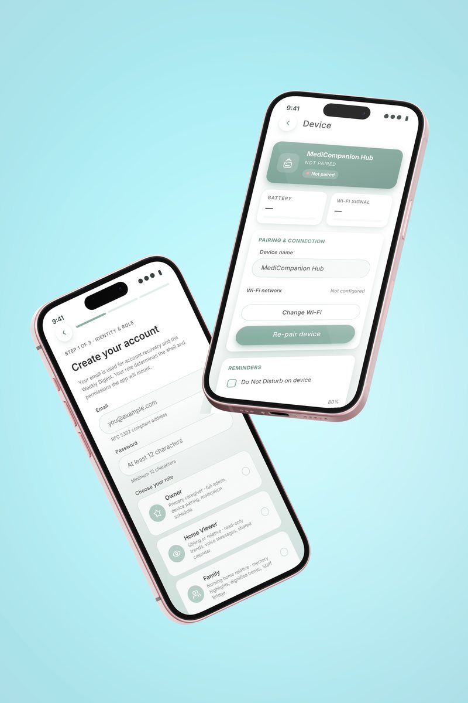
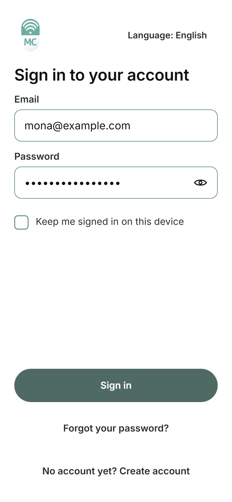
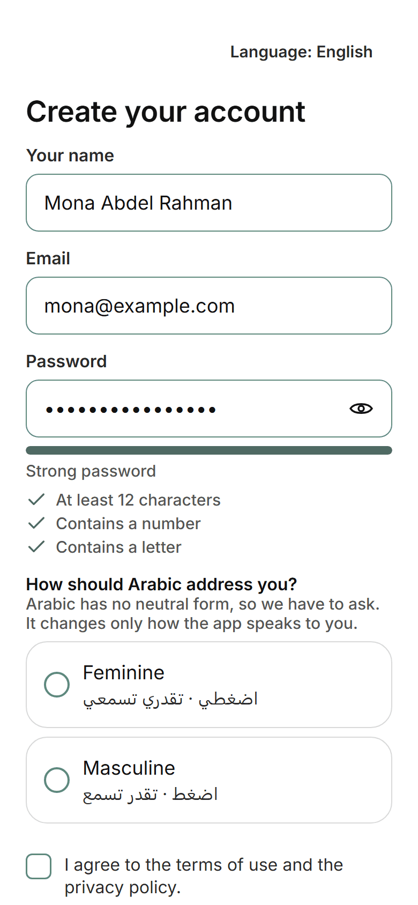
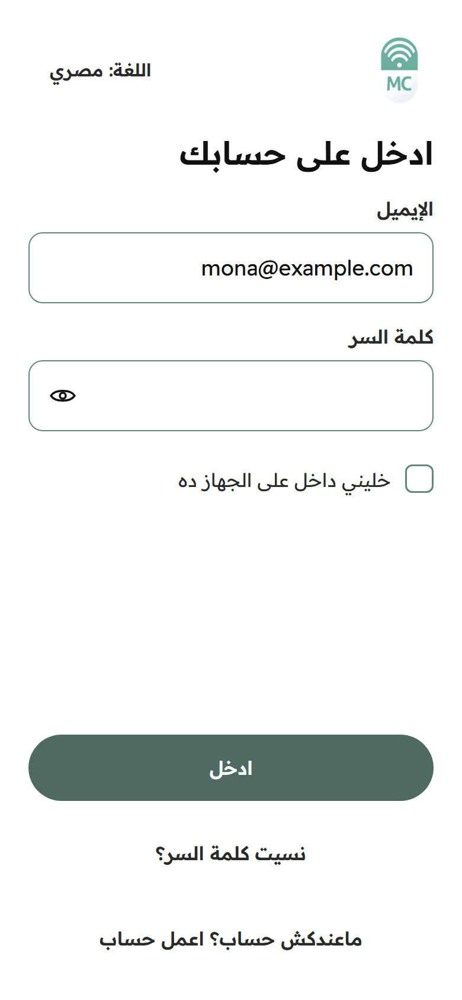
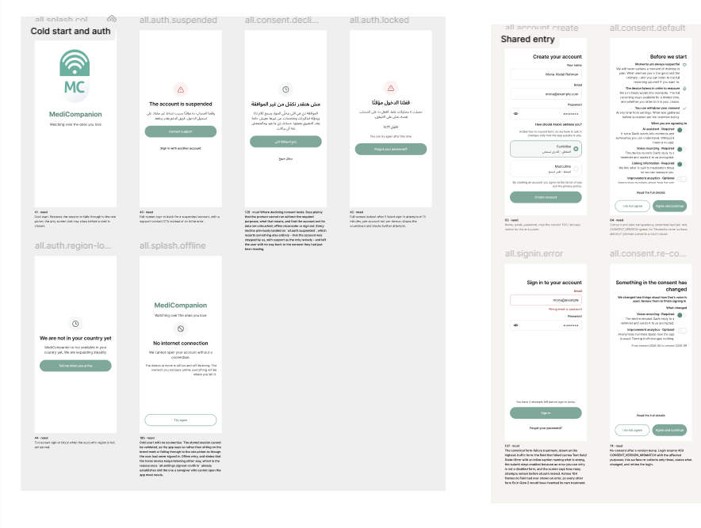
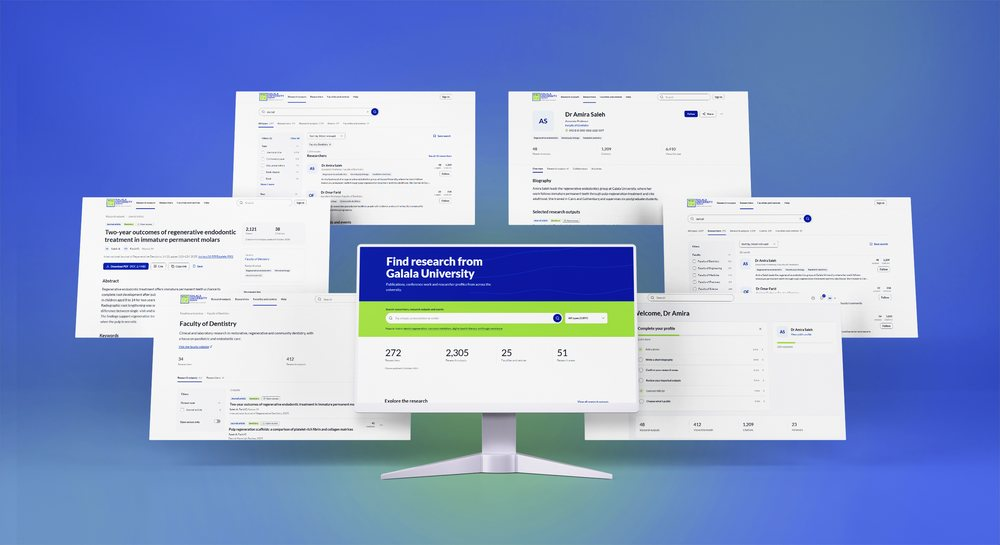
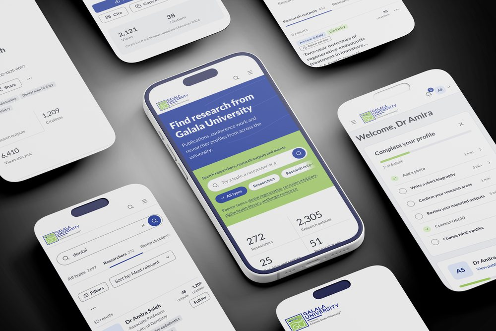
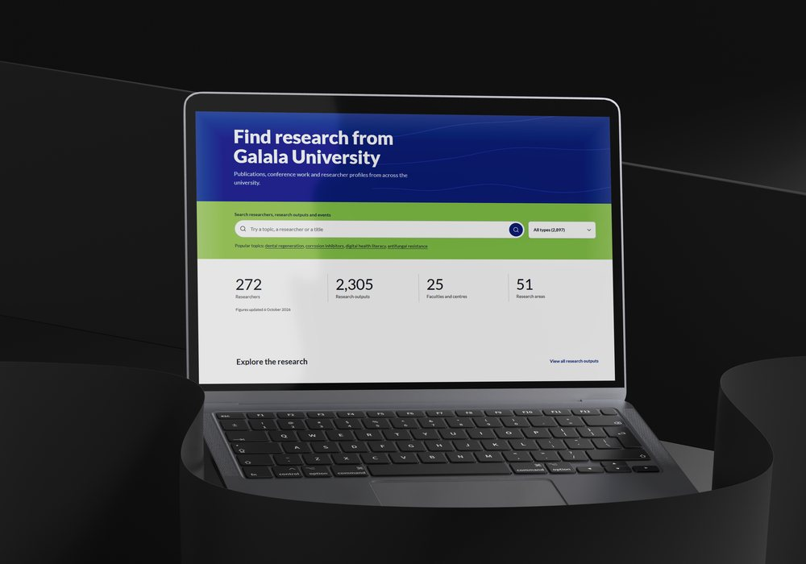
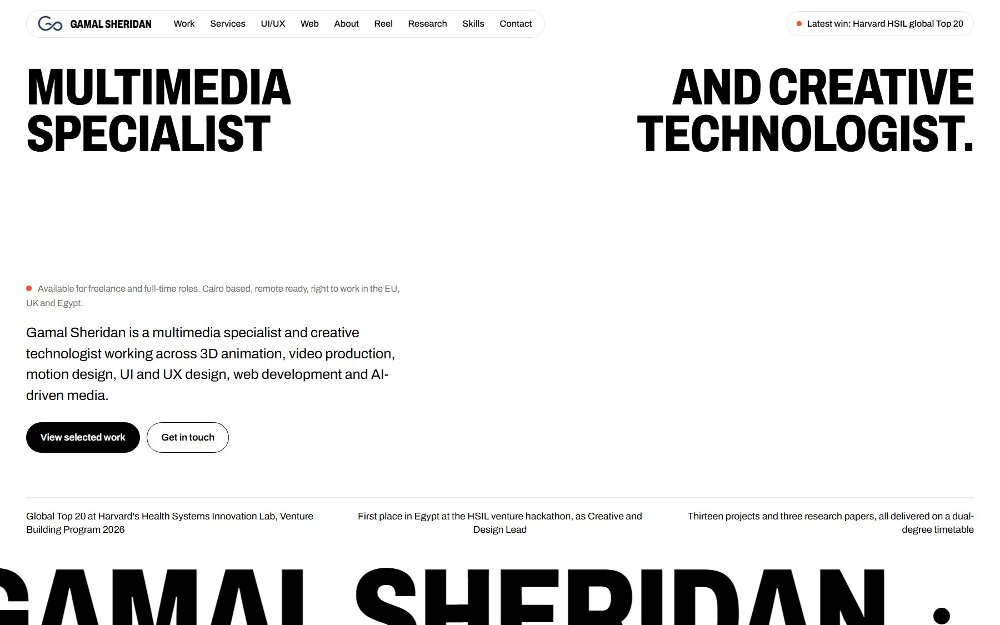
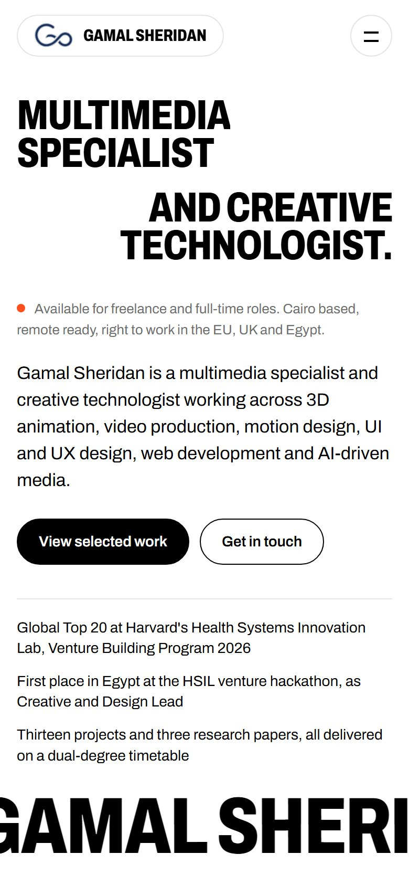

Three projects, each taken from the first user flow to finished screens: a family app for care homes, a research portal for a university, and this portfolio itself.
Case study 01
MediCompanion
MediCompanion keeps families close to a relative in a care home. I led its interface from the first flow to the finished screens, in English and Arabic, as Creative and Design Lead of the team that reached the global Top 20 at Harvard HSIL.





Open full boardCase study 02
Galala Scholar
A research portal for Galala University: one place to find the university's publications, conference work and researcher profiles, and a workspace where its researchers keep their own record up to date.



Case study 03
This portfolio
Web design and development. The example is the site you are reading. I designed it, then built it in plain HTML, CSS and JavaScript, with no template, framework or page builder underneath.

